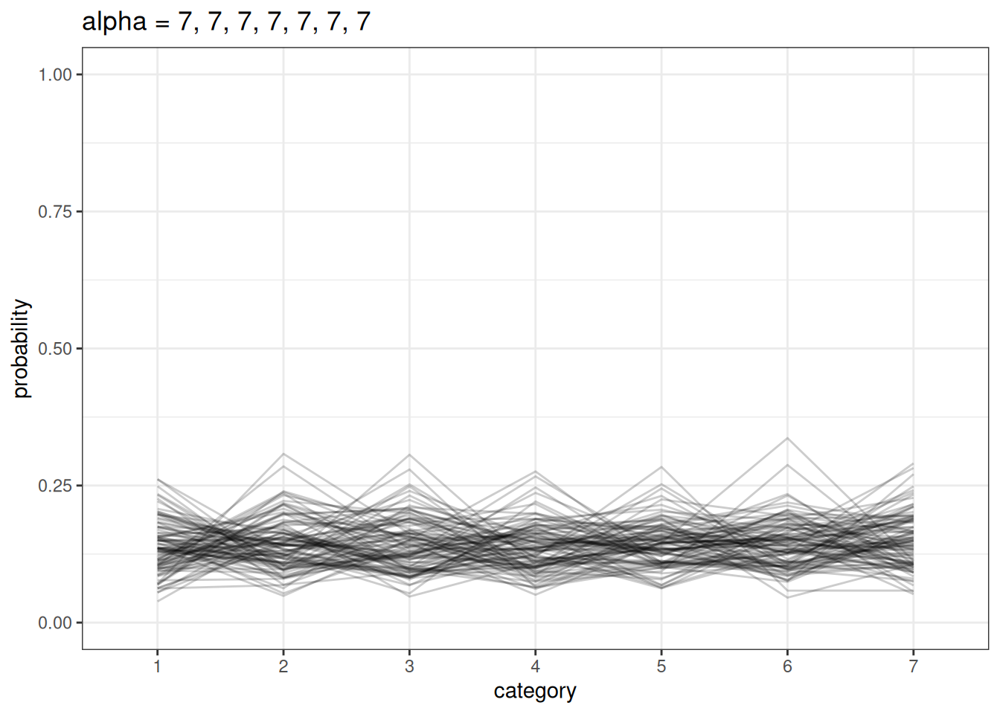
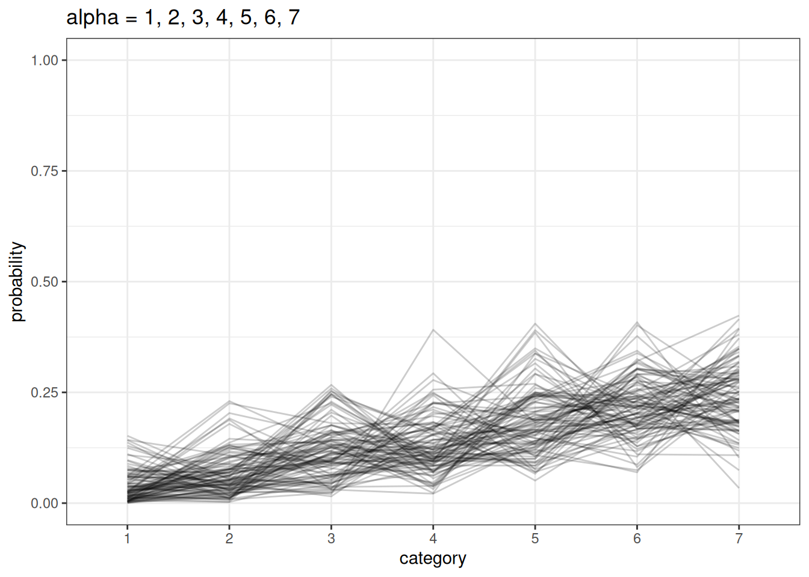

coords <- data.frame(
name = c('X', 'R', 'S', 'E', 'Y', 'G', 'P'),
x = c(1, 2, 3, 1, 2, 3, 2),
y = c(0, 0, 0, -2, -1, -2, -3)
)Lecture 11 Notes
Ordered categorical
Ordered categorical variables are discrete types with ordered relationships.
- not a count variable, not continuous
- bounded between min, max (eg. Trolley 1-7)
- eg. good, bad, excellent - not “cat, dog, chicken”
- distances between categories is not known or the same
- often there are “anchor points” and not everyone shares the same anchor point
Modeling an ordered categorical requires converting the orders to cumulative frequency. Instead of the probability of 5 out of 10, we have the probability of 5 or less out of 10.
 Recall, cumulative log-odds is the log of the probability of x occurring divided by the probability of x not occurring.
Recall, cumulative log-odds is the log of the probability of x occurring divided by the probability of x not occurring.
Now we are estimating cutpoints. The number of cutpoints we estimate is the number of categories - 1, since the cumulative probability of the last category is the total cumulative probability.
Then estimating the probability of a specific category is the probability of all categories up to that category subtracting the probability of all categories up to the preceding category.
To make it a function of the variables, either by stratifying the cutpoints or by offsetting each cutpoint by the value of a linear model \(\phi\).
\(\phi_{i} = \beta x_{i}\)
\(log \frac{Pr(R_{i} <= k)}{1-Pr(R_{i} <= k)} = \alpha_{k} + \phi_{i}\)
\(R_{i} \sim OrderedLogit(\phi_{i}, \alpha)\)
Example: Trolley problem
- Runaway trolley, actor standing next to a switch
- If you don’t pull the switch, it will strike 5 people on the track
- If you do pull the switch, it will strike 1 person on the track
Scenarios that contain three principles
- Action: taking an action is less morally permissible than not taking an action
- Intention: eg. pulling the lever to strike the 1 person and this stopping the trolley - this is necessary and intentional to save the 5 people
- Contact: eg. pushing a large person on the track
Data:
- 331 individuals
- action, intention, contact
- 30 different trolley problems
- voluntary participation
Response: how appropriate from 1-7
Estimand
How do action, intention and contact influence response to a trolley story?
dagify(
R ~ X + S + E + Y + G,
E ~ Y + G,
coords = coords
) |> ggdag(seed = 2, layout = 'auto') + theme_dag()- R: response to the trolley story
- X: action, intention, contact
- S: story
- E: education
- Y: age
- G: gender
Initial model
\(R_{i} \sim OrderedLogit(\phi_{i}, \alpha)\)
\(\phi_{i} = \beta_{A}A_{i} + \beta_{C}C_{i} + \beta_{I}I_{i}\)
\(\beta \sim Normal(0, 0.5)\)
\(\alpha_{j} \sim Normal(0, 1)\)
Total causal effect of gender
\(R_{i} \sim OrderedLogit(\phi_{i}, \alpha)\)
\(\phi_{i} = \beta_{A}A_{i, G_{i}} + \beta_{C}C_{i, G_{i}} + \beta_{I}I_{i, G_{i}}\)
\(\beta \sim Normal(0, 0.5)\)
\(\alpha_{j} \sim Normal(0, 1)\)
dagify(
R ~ X + S + E + Y + G,
E ~ Y + G,
exposure = 'G',
coords = coords
) |> ggdag_status(seed = 2, layout = 'auto') + theme_dag() + guides(color = 'none')Endogenous selection
Note - this is a voluntary sample and participation is influenced by age, education and gender. There is sample selection from this participation meaning the data is already stratified by the features of the participating population.
In addition, participation is a collider and conditioning on it makes education, gender and age co-vary in the sample. Therefore, we cannot estimate the total causal effect of gender.
dagify(
R ~ X + S + E + Y + G,
E ~ Y + G,
P ~ E + Y + G,
exposure = 'P',
coords = coords
) |> ggdag_status(seed = 2, layout = 'auto') +
theme_dag() +
guides(color = 'none')To get the direct effect of gender, we need to stratify by age and education. We’ll represent education as an ordered monotonic predictors.
Ordered monotonic predictors
Education is an ordered category, but it is unlikely that each level has the same effect for an equivalent unit change. We want a parameter for each level but we need to enforce ordering so there is always a larger or smaller effect than the previous level.
Each category is the sum of the previous and the last category is equal to the maximum effect of the variable. Then the deltas are all summed up (0-1) and multiplied by the maximum effect. The delta parameters form a simplex, a vector that sums to 1.

We rescale the \(\phi\) variables to sum to 1 (\(\beta_{E}\)).
\[\phi_{i} = \beta_{E} \sum_{j=0}^{E_{i}-1} \delta_{j}\]
We model a simplex using a Dirichlet distribution. Dirichlet distributions take a vector \(a\) (concentration parameters) that defines the differences among the categories. Larger values in \(a\) indicate that there are smaller differences between categories.
plot_dirichlet <- function(n, a) {
diri <- data.table(rdirichlet(n, a))
setnames(diri, as.character(seq_along(a)))
diri[, i := .I]
melt_diri <- melt(diri, id.vars = 'i')
ggplot(melt_diri) +
geom_line(aes(variable, value, group = i), alpha = 0.2) +
labs(x = 'category',
y = 'probability',
title = paste('alpha =', paste0(a, collapse = ', '))) +
ylim(0, 1)
}
n <- 100
n_cat <- 7
plot_dirichlet(n, rep(2, n_cat))plot_dirichlet(n, rep(7, n_cat))
plot_dirichlet(n, seq(1, n_cat))
Example: Trolley problem
Recall
- R: response to the trolley story
- X: action, intention, contact
- S: story
- E: education
- Y: age
- G: gender
bA, bI, bC are action, intention, contact
There are only direct effects for:
- gender (eg. bA[1], bA[2]) because we stratified for education given the participation effect (a collider)
- education (bE[1], bE[2]) again because of participation
- age (bY[1], bY[2]) again because of participation and education
This is a great example of complex causal effects. Instead of using the current sample which is contaminated by the participation bias, we can post-stratify (marginalize) to a new target that is representative of your estimand. Post-stratification simulation is the same as all previous examples of generative simulations using posterior samples.
Bonus: non-representative samples and post-stratification
Post-stratification or transport is a transparent, principled method for extrapolating from sample to population. It requires causal models of reasons the sample differs from population. All problems, whether they are descriptive, predictive or causal, have to consider the differences between the sample and the target population. Post stratification requires a causal model of the reasons that the sample differs from the population. Commonly used in surveys and elections (see multi-level regression and post-stratification “MRP”).
The quality of data is more important than quantity of data. Bigger samples amplify biases.
Example: larger surveys of COVID vaccination rate largely overestimated the CDC benchmark, while the smaller survey better represented the population
Non-representative samples can outperform representative samples if we know how the sample differs from our target population.
Example: Wang et al 2014, Xbox survey of election results for Obama vs Romney, post-stratified to target population
Example of four age groups. Just because the sample differs from the population doesn’t tell us what we need to do statistically.
Selection nodes indicate reasons why the sample differs from the population. Eg. selection by age.
Some selection is recoverable, eg. where age stratification in the sample that influences X. Influence on the outcome variable, eg. where anarchists don’t answer the phone, are not recoverable because the results you need are not in the data.
Many questions are really post-stratification questions: - justified descriptions require causal information and post-stratification - causal effects require causal information and post-stratification - time trends should account for changes in measurement/population - comparisons are post-stratification between populations
Read more here:
Deffner, D., Rohrer, J.M. and McElreath, R., 2022. A causal framework for cross-cultural generalizability. Advances in Methods and Practices in Psychological Science, 5(3), p.25152459221106366.
Simple 4-step plan for honest scholarship
- What are we trying to describe?
- What is the ideal data for doing so?
- What data do we actually have?
- What causes the differences between (2) and (3)?
- [optional] Is there a way to use (3) + (4) to do (1)?